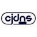

Alustat /
Reitittimet
DNS
Vapaat suositukset

nsupdate.info
Vapaa dynaaminen DNS-palvelu. Ohjelmalla saat helposti muistettavan DNS-nimen vaihtuvan ja vaikeasti muistettavan IP-osoitteen tilalle. Käyt…

Huomioita
Google Public DNS tallentaa pysyvästi lokit palveluntarjoajastasi ja sijainnistasi analysointia varten. IP-osoitteesi tallennetaan 24 tunniksi.
OpenNIC ei ole ottanut käyttöön julkista käytäntöä liittyen lokipyyntöjen yksityisyyteen/anonymisointiin Lisätietoja on saatavilla täältä.
Omisteinen*
 Google Public DNS
Google Public DNS
 OpenDNS
OpenDNS
Firmware
Vapaat suositukset


Huomioita
libreCMC on FSF:n suosittelema OpenWrt-johdannainen ilman omisteisia blobeja. Jos laitteesi on libreCMC:n tukema, käytä sitä mieluummin kuin OpenWrt:tä.
Omisteinen*
Mesh Networks
Vapaat suositukset


Cjdns
Cjdns on verkkoprotokolla, digitaalisten asetusten järjestelmä viestien välittämiseen tietokoneiden välillä. Sen sijaan, että tietokoneet yh…

Commotion
Käyttää matkapuhelimia, tietokoneita ja langattomia reitittimiä hajautetun mesh-verkon luomiseen.

Enigmabox
Plug and play cjdns ohjelmisto. Tarjoaa hajautetun, päästä päähän salatun VoIP ja sähköpostipalvelun.

Freifunk
Epäkaupallinen ruohonjuuriliike joka pyrkii tukemaan avoimia radioverkkoja ympäri maailmaa.


tinc
Vapaa ohjelmisto-daemon, joka käyttää tunnelointia ja salausta turvallisen yksityisverkon luomiseen.
Huomioita
Mesh-verkot ovat hajautettuja peer-to-peer verkkoja, käyttäjien hallinnoimilla fyysisillä, langattomilla linkeillä.
“Mesh-verkko (topologia) on verkkotyyppi, jossa jokainen noodi kerää ja levittää dataa, ja toimii samalla välittäjänä muille noodeille, eli sen täytyy tehdä yhteistyötä levittääkseen tietoa verkossa.“
Omisteinen*
VPN-palvelimet
Omisteinen*